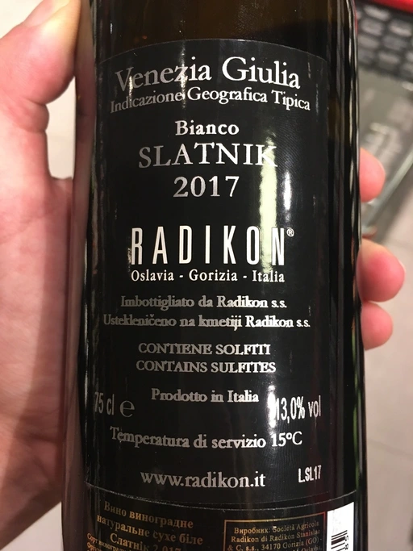

- Type
- White Still, Dry
- Producer
- Radikon
- Vintage
- 2017
- Location
- Italy, IGP Venezia Giulia
- Grapes
- Chardonnay
- Alcohol
- 13
- Sugar
- 0.1
- Price
- 955 UAH
- Cellar
- N/A
Producer
Stanko Radikon is a legendary farmer and winemaker from a legendary region. He and his friends (Gravner) started period of renaissance for amber wines - white wines with extended skin maceration. But of course, in town of Oslavia it was called “Slovenian” or “Friuli” style - hand-harvesting, skin contact, large and older barrel fermentation without any temperature control, no added yeasts or enzymes, and little to no use of sulfur.
The vineyards were originally planted in the beginning of XX century by Stanko’s grandfather Franz Mikulus with the local favorite, the Ribolla Gialla grape. And basically, Stanko went back to the ways his grandfather was producing wines back in 30s.
After Stanko passing away in 2016, his son Saša took the winery in his hands. Though people say that nothing has really changed in the philosophy of Radikon winery as Saša has been helping out since he was a kid and a partner since 2006.
Ratings
2020-08-12 - 8.00
Elegant, fruity with hints of pickles. Lemon curd and apricot. Good structure and tannins, long finish, flavours of citrus, apples and acetone. Tasty and sophisticated.